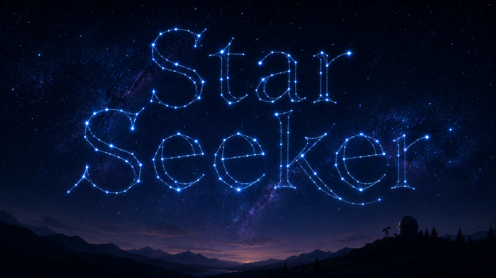

Observation
Where will you be, and when?
Tonight's plates
Visible constellations
Enter a date and location above, and the night's constellations will be drawn here.

A field guide to tonight's sky.
Observation
Tonight's plates